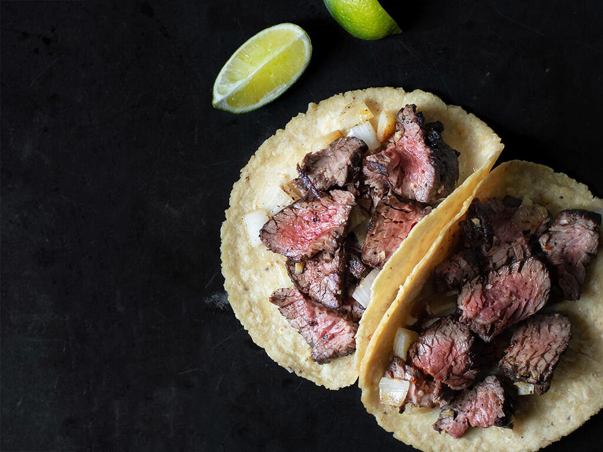

Steak Tacos

Steak Tacos with Mojo de Ajo
Delivering bold flavor with a simple preparation, the combination of steak, garlic and lime is satisfying and, to some, reassuringly familiar. That's not to say Stupak won't
dig into the unexpected corners of Mexican cuisine--all in good time.
Ingredients
- 1 stick unsalted butter
- ½ cup plus 1 tablespoon olive oil, divided
- 12 cloves garlic, thinly sliced (about ⅓ cup)
- 4 árbol chiles
- 1 plum tomato, coarsely chopped
- ½ cup orange juice
- Salt and freshly ground black pepper
- 1 medium white onion, thinly sliced
- 1½ pounds skirt steak, trimmed of fat and sinew
- 6 corn tortillas, warmed
- Lime wedges
Steps
- In a small saucepan set over medium heat, melt the butter, allowing it to brown slightly, about 5 minutes. Add ½ cup of the olive oil, garlic and chiles. Stir the mixture and cook over low heat until the garlic is golden brown. Stir in the chopped tomato and orange juice and continue to simmer, cooking until the tomato begins to break down. Season with salt and pepper, remove the chiles and carefully transfer the mixture to a blender. Blend until smooth, return the mixture to the pan and keep warm.
- In a medium skillet, cook the onions in the remaining 1 tablespoon of olive oil until softened and brown, about 10 minutes. Season with salt and keep warm.
- Rub the skirt steak with some of the reserved sauce and season with salt and pepper. On a grill pan set over high heat, grill the skirt steak for 2 to 3 minutes on each side until medium-rare. Remove the steak from the grill, place on a cutting board and cover with aluminum foil for 10 minutes. Slice the steak against the grain into ½-inch slices.
- To assemble the tacos, pile the reserved onions on top of the tortillas. Top with skirt steak, a bit of the garlic sauce and a squeeze of lime. Serve immediately.